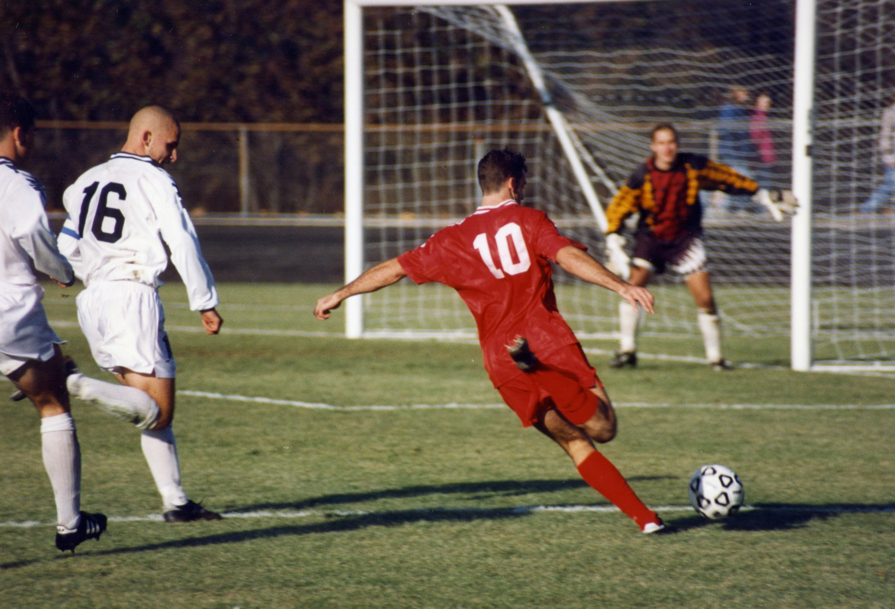
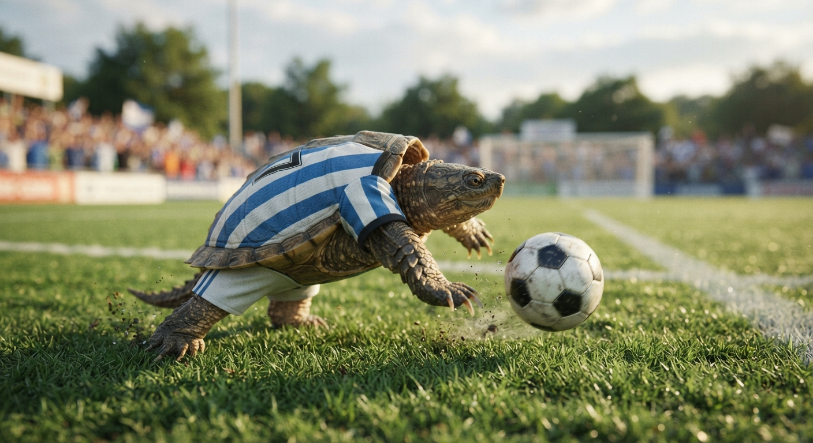
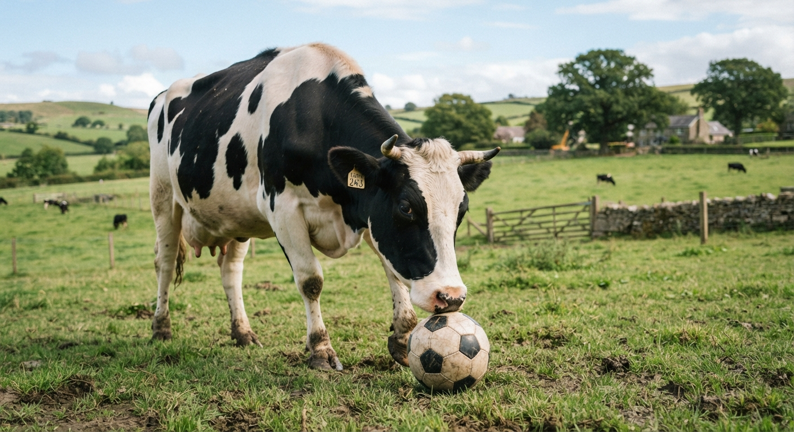
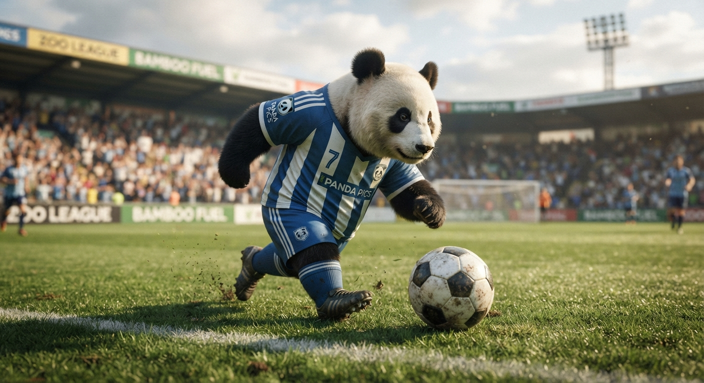

Ajalugu
Jalgpallilaadset mängu mainivad vanimad kirjalikud allikad on Hiina sõjaväe käsiraamatud 2. ja 3. sajandist eKr. Euroopas on sarnast mängu harrastatud keskajast.
Kaasaegne jalgpall sai alguse katsetest ühtlustada 1840. aastail Inglismaa koolides kehtinud mängureegleid. Nende püüdluste tulemusena asutasid 12 klubi ja kooli 1863. aastal Inglismaa jalgpalliliidu (The Football Association – FA). Osa neist ei olnud nõus jõuvõtete keelustamisega ja lõid lahku, moodustades 1871. aastal Inglismaa Ragbiliidu. Vaidlustele tegi lõpu 1886. aastal Inglismaa, Šotimaa, Walesi ja Iirimaa jalgpalliliidu asutatud Rahvusvahelise Jalgpalli Nõukogu (IFAB).
Jalgpalli esitine areng leidis aset Briti saartel. Maailma vanim jalgpallivõistlus on 1871. aastal käivitunud FA karikas. Esimese ametliku maavõistluse pidasid 1872. aastal Inglismaa ja Šotimaa. Vanim liiga on 1888. aastal asutatud The Football League, mis oli 1992. aastani Inglismaa kõrgliiga.
Rahvusvahelise jalgpalliliidu FIFA moodustasid 1904. aastal Pariisis seitsme riigi esindused. Prantsusmaa algatusel loodud ühendus lubas kinni pidada Briti saartel väljakujunenud mängureeglitest. Esimesed maailmameistrivõistlused peeti 1930. aastal.
(Viide:
Jalgpall
)

Kas tunned ära?


